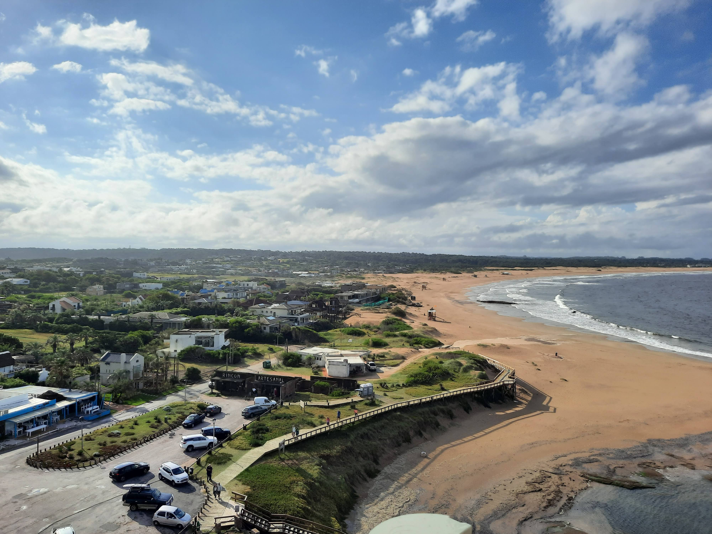

Go Back
José Ignacio

José Ignacio is a beautiful little town about 45 mins from Punta del Este. It's well known for it's laid back vibe and is one of the most sought after destinations in the country. It's an easy day trip from Punta del Este and is definitely worth visiting. Here are my favourite activities to do in José Ignacio.
You can climb up the lighthouse for some fantastic views of the town. It only costs about 25 Uruguayan pesos which is like 0.60 USD. It doesn't take too long to climb up to the top. Once you arrive at the top you will have a great 360 degree view of the town and the surrounding Ocean.
The main beach in José Ignacio is quite nice. There are a few restaurants and shops around the beach too. It's much quieter here than in Punta del Este so if you want to visit less crowded beaches this is a good place.
You can finish your trip by stopping at Panadería José Ignacio for merienda (a small meal between lunch and dinner that is typical in Uruguay sometime in the early evening/ late afternoon). You can get delicious ham and cheese croissants, biscochos (little pastries) and of course coffee. You can sit outside an enjoy the scenic environment of the town.